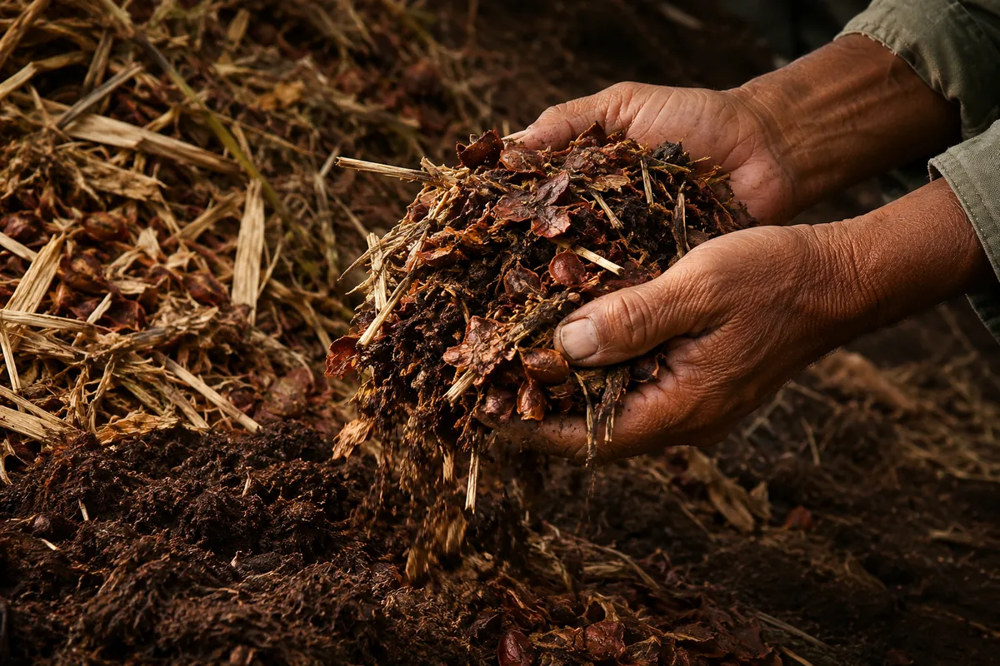
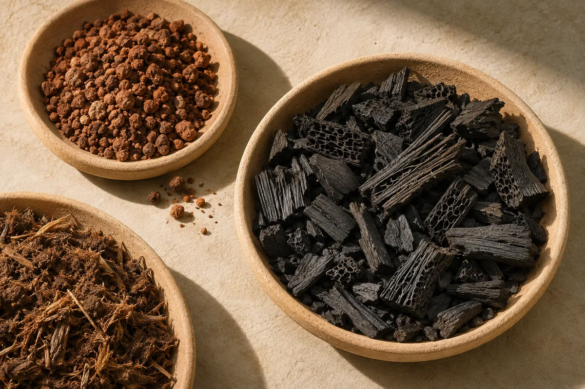

Inventário de resíduos e biomassas
Um levantamento por origem, volume, época do ano e destino atual mostra quais materiais priorizar e quais alternativas vale investigar.

Portfólio ArkheAnanda
Compare caminhos para um resíduo, planeje o manejo de um talhão ou desenhe um novo plantio. Conheça os serviços e as linhas de produtos para viveiros e lavouras.

Escolha um tema para ver o que o trabalho abrange. Se a sua demanda envolve mais de uma área, conte o que pretende fazer.
Baixar portfólio em PDFNovembro de 2026 · arkheananda.com.br · contato@arkheananda.com.br
Portfólio de serviços e produtos
Serviços
Para cooperativas, sementeiras e agroindústrias que precisam encaminhar lotes ou aproveitar resíduos orgânicos.
Avaliar um resíduoQue destino pode receber o material e a que custo?
Um levantamento por origem, volume, época do ano e destino atual mostra quais materiais priorizar e quais alternativas vale investigar.
Comparamos destinos, frete, condições de recebimento e comprovantes de cada rota. Para sobras de sementes já tratadas, o estudo considera o tratamento aplicado ao lote.
Para resíduos orgânicos de origem conhecida, como os do beneficiamento de frutas, comparamos escala, localização, investimento e custo de operação antes da decisão de implantar.
Organizamos remessas, transportadores, receptores e comprovantes por lote. A movimentação física depende do aceite do material pelo destinador e das habilitações de quem executa a operação.
Portfólio de serviços e produtos
Serviços
Para produtores, cooperativas e equipes técnicas que acompanham a fertilidade e a resposta da lavoura.
Conversar sobre minha áreaQuais talhões precisam de atenção primeiro?
Cruzamos o histórico de manejo com análises disponíveis e observações de campo. O diagnóstico indica, em mapa ou quadro, quais áreas precisam de atenção primeiro.
O plano organiza fontes orgânicas e minerais, épocas de aplicação e critérios de ajuste conforme a cultura e as condições de cada talhão.
A partir da condição inicial da área, definimos o que observar e quando voltar a medir. O relatório de cada ciclo relaciona o manejo à resposta do solo e da cultura.
Portfólio de serviços e produtos
Serviços
Para produtores de grãos, frutas e café, sementeiras e gestores de sistemas agroflorestais.
Planejar um plantioO que plantar em cada área e em qual sequência?
Para implantar uma área ou rever o manejo de um pomar ou cafezal, organizamos o calendário de operações, as visitas previstas e o registro das decisões de campo.
O desenho mostra onde combinar culturas agrícolas e árvores, quais espécies cumprem cada função e em que sequência plantar e fazer a manutenção.
O plano distribui as culturas e coberturas entre talhões e safras. Indica as janelas de semeadura e como conferir se a cobertura se estabeleceu.
Para lotes destinados ao plantio, definimos finalidade, modalidade de tratamento e registros por lote. A aplicação depende da capacidade e da disponibilidade do executor para a cultura e o volume consultados.
Portfólio de serviços e produtos
Serviços
Para viveiristas, paisagistas e gestores de propriedades e áreas verdes, do preparo das mudas ao replantio.
Conversar sobre o projetoQue espécies plantar e como cuidar delas depois?
Dimensionamos lotes por espécie e porte, espaço de viveiro e janela de plantio. O programa reúne quantidades estimadas, procedência e previsão de entrega.
Para implantar ou renovar jardins e áreas verdes, o plano distribui as espécies conforme luz, espaço e manutenção e indica as quantidades de mudas.
Com o projeto de plantio em mãos, organizamos o orçamento por área, a sequência de implantação e o calendário de cuidados. A proposta identifica a equipe e o fornecimento de mudas.
O plano divide a área em trechos, indica espécies e procedências, estima as mudas necessárias e define o calendário de plantio e acompanhamento.
Nas vistorias, registramos a sobrevivência das mudas e a cobertura por trecho. O registro orienta onde repor plantas e quais cuidados priorizar.
Portfólio de serviços e produtos
Serviços
Para fabricantes de insumos, cooperativas, viveiros e equipes de pesquisa que querem testar um material ou uma prática de manejo.
Discutir um ensaioVale a pena levar este material do ensaio ao campo?
Organizamos os dados de origem, composição e variabilidade de biomassas, compostos e materiais minerais. O estudo aponta o que ainda precisa ser verificado para o uso pretendido.
Definimos com o parceiro a composição a investigar, os atributos do protótipo e a referência de comparação para substratos, organominerais e materiais à base de biochar.
Desenhamos o ensaio para comparar a alternativa com o manejo atual. Quando o projeto inclui a execução, a entrega reúne os dados observados e a interpretação dos resultados.
Transformamos a pergunta de pesquisa em um plano de trabalho, com responsabilidades, orçamento, entregas e critérios para decidir se o estudo deve continuar.
Portfólio de serviços e produtos
Linhas de produtos
Do plantio de espécies nativas à formação de um pomar, cada área pede uma muda, um substrato e uma época de implantação.
Ver fertilizantes e biocharAs linhas de mudas estão em planejamento. Para consultar a possibilidade de fornecimento, indique espécie, quantidade, município e época de plantio.
Em planejamento
Para revegetação e restauração. A escolha das mudas considera as espécies adequadas ao local, a procedência, o porte e a época de plantio.
Em planejamento
Para jardins, condomínios e espaços de uso coletivo. A seleção considera a exposição ao sol, o porte adulto e os cuidados previstos para cada espécie.
Fornecimento em estudo
Para implantação de pomares e cafezais. A possibilidade de fornecimento depende da região, da cultivar, da procedência e de um viveiro apto a atender o pedido.
Proposta de desenvolvimento
Desenvolvimento em parceria com viveiros para comparar propriedades físicas e resposta das mudas por espécie, recipiente e fase de produção.
Portfólio de serviços e produtos
Linhas de produtos
Compostos, grânulos e biocarvão são frentes de desenvolvimento para o manejo da fertilidade e a formulação de insumos.
Ver mudas e substratosEstas linhas estão abertas a conversas sobre desenvolvimento e pesquisa. O ponto de partida é a origem do material e o uso que se pretende avaliar.
Em planejamento
Linha voltada ao uso de matéria orgânica no manejo da fertilidade. A oferta depende da origem do material, da qualidade do lote e do enquadramento para o uso agrícola.
Proposta de desenvolvimento
Proposta para fabricantes e cooperativas que estudam combinar fontes orgânicas e minerais. O projeto define a formulação a testar e as características esperadas dos grânulos.
Proposta de pesquisa
Pesquisa proposta sobre a associação do biocarvão a fontes minerais. A avaliação compara o desempenho no solo ou substrato escolhido para o estudo.
Proposta de pesquisa
Linha de pesquisa proposta sobre o uso do biocarvão como suporte sólido. O estudo parte da compatibilidade com o insumo e da estabilidade necessária para a aplicação.
Conversar sobre o desenvolvimento de um insumo
Contato para projetos e parcerias · contato@arkheananda.com.br